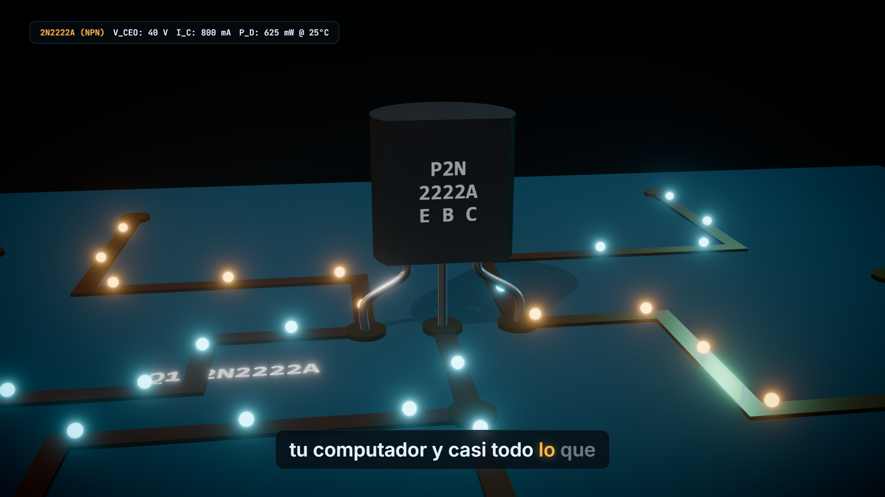

Identificación y Pinout Real
Con la cara plana mirando hacia ti y las patas hacia abajo, el estándar JEDEC 2N2222A / PN2222A tiene orden Emisor · Base · Colector (1-2-3). Atención: la variante P2N2222A y los transistores europeos como el BC547 invierten los extremos (C-B-E).
- E-B-C (JEDEC)
- Prueba diodo: 0,68 V
- 625 mW máx